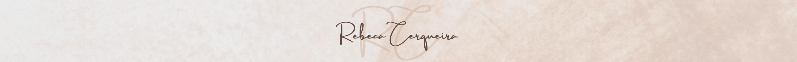

Acredito que a verdadeira essência do profissional também se revela nas experiências pessoais. Minha vida vai muito além dos desafios do trabalho; ela é composta por momentos de reflexão, paixão pela arte e um constante desejo de aprender.
Desde a infância, aprendi a valorizar as relações familiares e a importância das tradições. Esse alicerce me permite encarar a vida com equilíbrio e gratidão. Gosto de desafios e acredito que cada obstáculo é uma oportunidade de crescimento. Minha energia vem da minha paixão por criar, compartilhar conhecimento e me conectar com pessoas inspiradoras.
Tenho um espírito dinâmico, daqueles que não consegue ficar parado por muito tempo. Seja estudando um novo assunto, planejando uma viagem inesperada ou simplesmente organizando encontro com amigos, estou sempre buscando algo novo para explorar. Se tem uma coisa que me motiva, é saber que cada dia traz uma nova chance de aprender e evoluir!
Este espaço foi criado para compartilhar não só minha carreira, mas também as histórias, reflexões e paixões que me definem como pessoa. Convido você a se inspirar e, quem sabe, encontrar em minhas vivências um estímulo para trilhar o seu próprio caminho.
Voltar para página principal 